Chemin complet : /home/chupin/projects/Overview_Bag_2025/website3/urban_1_22_01_2025
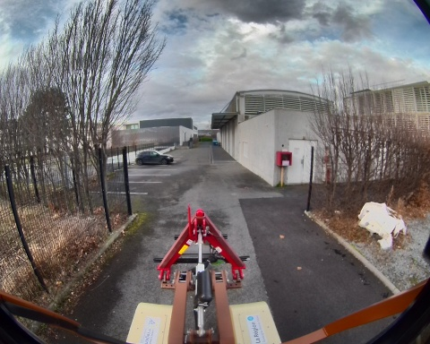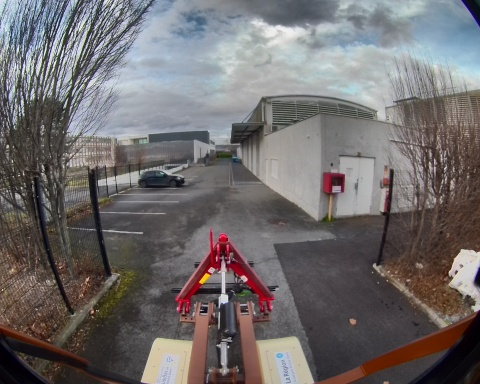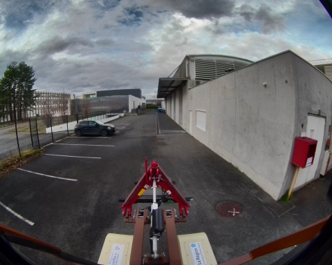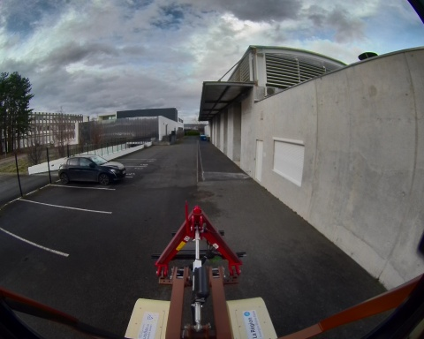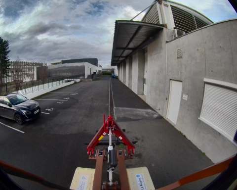
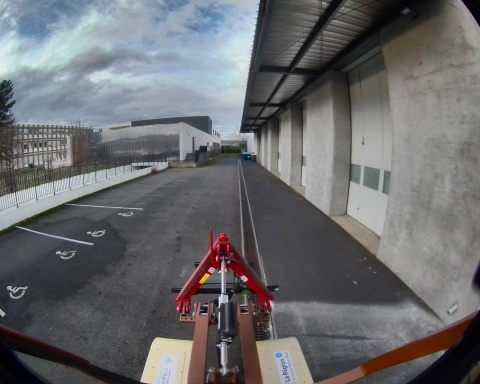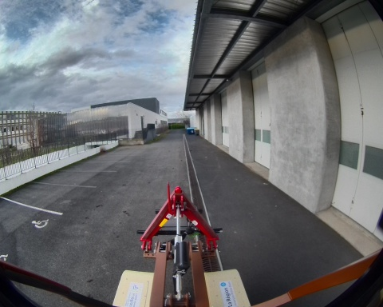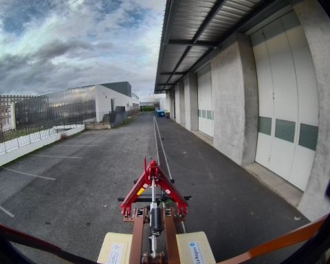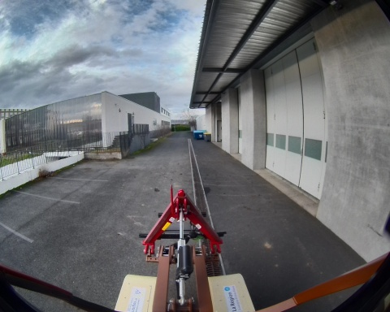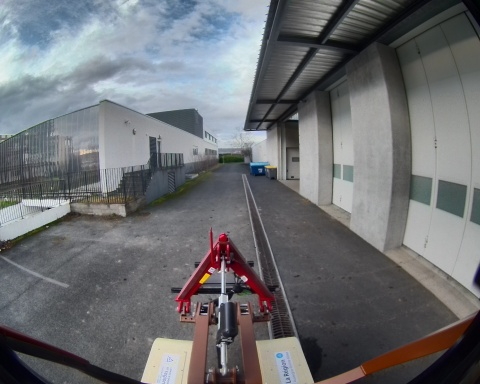
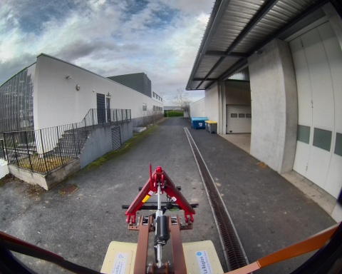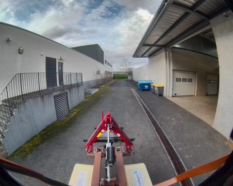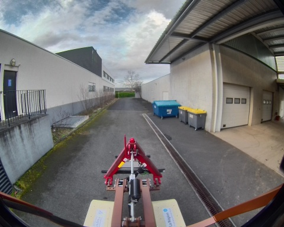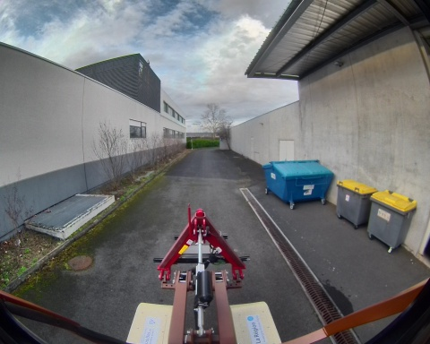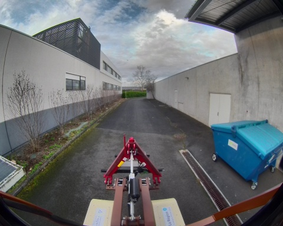
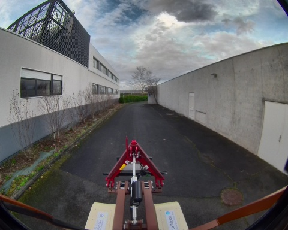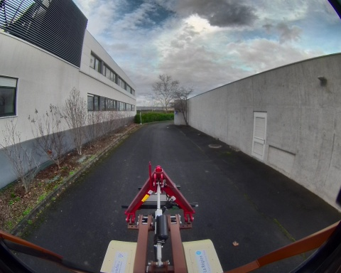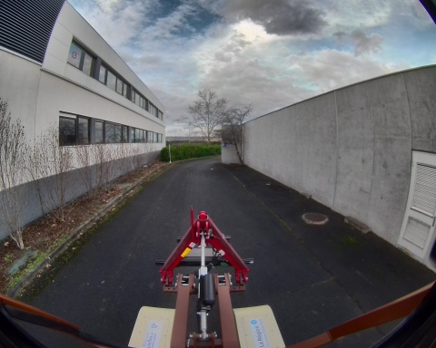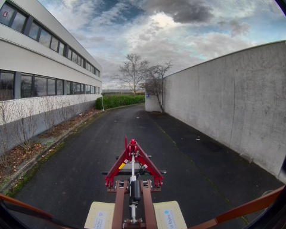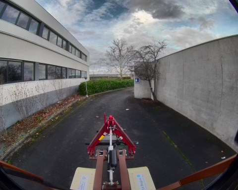
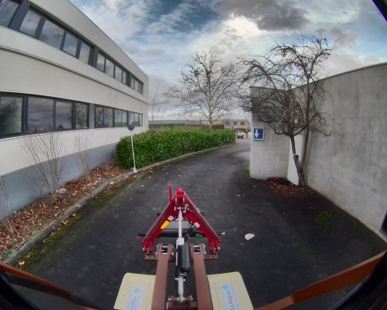
Files: urban_1_22_01_2025_0.db3
Bag size: 2.3 GiB
Storage id: sqlite3
Duration: 56.525897699s
Start: Jan 22 2025 16:31:20.277922334 (1737559880.277922334)
End: Jan 22 2025 16:32:16.803820033 (1737559936.803820033)
Messages: 43479
Topic information: Topic: /alpo/imu/velocity | Type: geometry_msgs/msg/TwistStamped | Count: 5641 | Serialization Format: cdr
Topic: /alpo/imu/mag | Type: sensor_msgs/msg/MagneticField | Count: 5641 | Serialization Format: cdr
Topic: /alpo/imu/data | Type: sensor_msgs/msg/Imu | Count: 5641 | Serialization Format: cdr
Topic: /alpo/base/bridge/vehicle_controller/odom | Type: nav_msgs/msg/Odometry | Count: 562 | Serialization Format: cdr
Topic: /alpo/joint_states | Type: sensor_msgs/msg/JointState | Count: 5641 | Serialization Format: cdr
Topic: /alpo/gps/ntrip/rtcm | Type: mavros_msgs/msg/RTCM | Count: 611 | Serialization Format: cdr
Topic: /tf_static | Type: tf2_msgs/msg/TFMessage | Count: 6 | Serialization Format: cdr
Topic: /alpo/lidar/pointcloud_synchro | Type: sensor_msgs/msg/PointCloud2 | Count: 280 | Serialization Format: cdr
Topic: /alpo/imu/imu_data_str | Type: std_msgs/msg/String | Count: 5642 | Serialization Format: cdr
Topic: /rosout | Type: rcl_interfaces/msg/Log | Count: 691 | Serialization Format: cdr
Topic: /alpo/joystick/joy | Type: sensor_msgs/msg/Joy | Count: 452 | Serialization Format: cdr
Topic: /alpo/gps/vel | Type: geometry_msgs/msg/TwistStamped | Count: 553 | Serialization Format: cdr
Topic: /diagnostics | Type: diagnostic_msgs/msg/DiagnosticArray | Count: 679 | Serialization Format: cdr
Topic: /parameter_events | Type: rcl_interfaces/msg/ParameterEvent | Count: 0 | Serialization Format: cdr
Topic: /tf | Type: tf2_msgs/msg/TFMessage | Count: 1004 | Serialization Format: cdr
Topic: /alpo/gps/nmea_sentence | Type: nmea_msgs/msg/Sentence | Count: 9588 | Serialization Format: cdr
Topic: /alpo/robot_description | Type: std_msgs/msg/String | Count: 1 | Serialization Format: cdr
Topic: /alpo/gps/fix | Type: sensor_msgs/msg/NavSatFix | Count: 564 | Serialization Format: cdr
Topic: /alpo/camera/image_synchro | Type: sensor_msgs/msg/Image | Count: 282 | Serialization Format: cdr